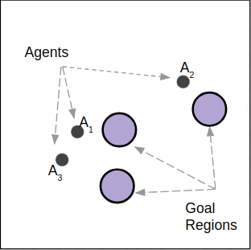
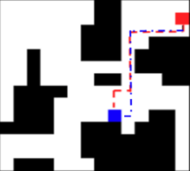

|  |
Scalable Centralized Deep Multi-Agent Reinforcement Learning via Policy Gradients
Submitted to Neural Information Processing Systems (NIPS), 2018 A. Khan, C. Zhang, D.D. Lee, V. Kumar, A. Ribeiro |
|---|

|
Learning Sample Efficient Target Reaching for Mobile Robots International Conference on Intelligent Robots and Systems (IROS), 2018 A. Khan, V. Kumar, A Ribeiro |
|---|
|  |
Memory Augmented Control Networks International Conference on Learning Representations (ICLR), 2018 A. Khan, C. Zhang, N. Atanasov, K. Karydis, V. Kumar, D.D. Lee |
|---|